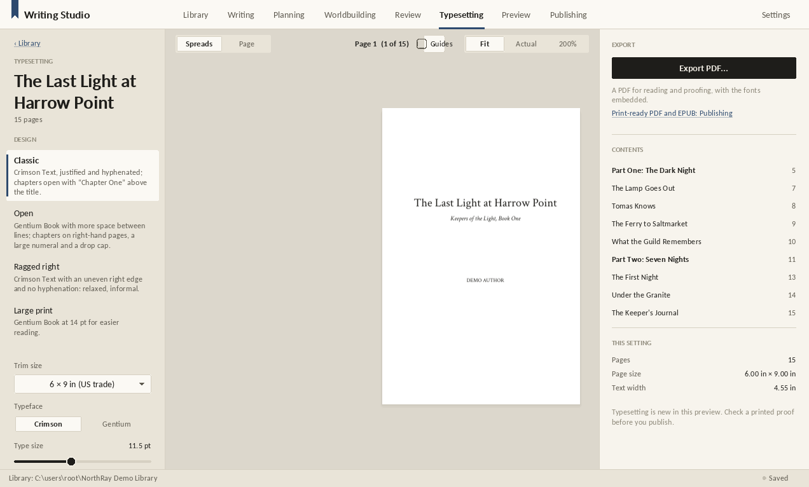

Writing and publishing
NorthRay Writing Studio
A writing and publishing studio for authors: worlds, series and books, through to finished editions.
NorthRay Software · Preview
Screenshots

The author library: worlds, series and books on a bookshelf. 
Planning: every chapter as a card, with status, viewpoint and word targets. 
Worldbuilding: the world's bible of characters, places, groups and lore. 
Review: what changed since a snapshot, word by word. 
Typesetting: the book laid out as printed pages. 
Publishing: a pre-flight check, spine width and print files for each edition.

About
NorthRay Writing Studio is a desktop app for writing and publishing books. It organises your work as worlds, series and books, and each book as parts, chapters and scenes, written in a calm, page-like editor that saves as you type, keeps earlier versions, and takes comments on the text. Pictures live in an artwork library, with crops and print-resolution checks that never touch the originals. Existing books can be imported from EPUB, Word, OpenDocument, HTML, Markdown and plain text, with PDF import as an experiment. Each book has a planning board, and each world keeps a bible of its characters, places and lore, showing where each appears in the books. Books are typeset into finished pages and previewed as an ebook on different devices, then exported as a print-ready PDF (PDF/X-1a) and an EPUB, after a pre-flight check that also gives the spine width for the cover. Everything stays on your PC unless you choose to keep a world in a GitHub repository of your own, to write on more than one computer; no NorthRay account or subscription is needed.
What's in it
- IncludedAuthor Library: worlds, series, books
- IncludedManuscript editor: parts, chapters, scenes, versions
- IncludedImport: EPUB, Word, OpenDocument, HTML, Markdown, text (PDF experimental)
- IncludedArtwork and illustration control
- IncludedProfessional typesetting
- IncludedPrint and ebook previews
- IncludedEPUB and print-ready PDF export (first version)
- IncludedWorldbuilding: characters, places, lore and where they appear
- IncludedPlanning board: synopses, status, viewpoint, word targets
- IncludedReview: changes, snapshots, name checks, writing goals
- IncludedComments on the text
Features
- Author Library: worlds, series and books, with standalone and independent books
- Manuscript editor: parts, chapters and scenes, semantic paragraph styles, scene breaks, pictures and spell-check
- Saves as you type, keeps earlier versions of every chapter and scene, and a Trash you can restore from
- Artwork library: crop, size and align pictures without changing the originals, with print-resolution checks for your trim size
- Import from EPUB, Word (.docx), OpenDocument (.odt), HTML, Markdown and text; PDF import is experimental
- Reading order and chronological order for every series; drag and drop to organise
- Typesetting: justified, hyphenated pages with running heads and page numbers, shown as spreads, and exported as a PDF
- Worldbuilding: a bible of characters, places, groups, things, lore and events for each world, with relationships and the chapters each appears in
- Planning board: every chapter and scene as a card with its status, synopsis, viewpoint character, who appears in it, and word targets
- Review: compare any chapter with earlier versions or whole-book snapshots, check names against the world's bible, and track daily writing goals
- Comments: notes pinned to words in the text, resolved when they're dealt with, and listed for the whole book in Review
- Ebook preview on a phone, an e-reader and a tablet, with the reader's own text size, font and page colour
- Publishing: paperback, hardback, large-print and ebook editions with their own ISBNs; print-ready PDF/X-1a and EPUB 3 export, a pre-flight checklist, and spine and cover measurements
- Sync with GitHub: keep a world, pictures included, in your own private repository and write on more than one computer
What's new
Version 0.70.0 · 2026-11-23
- Writing has more room for the text: the outline is narrower (F3 still hides it), and the details panel is gone until you want it.
- A bar over the page shows the chapter you're in: its kind, its name (click it to rename it there; Enter keeps it and goes on to the text, Esc puts it back), its status (click it to change it) and its words.
- At the bar's right, Details (or F4) opens the chapter's details in a card beside the text, and Chapter tools ▾ has Details, Earlier versions…, Plan it on the corkboard, New chapter, New scene, New part, Move up, Move down, Import into this book… and Move to Trash.
- A picture or a comment chosen in the text opens its details in the same card. The top bar's details button in Writing shows and hides the chapter's details.
Version 0.69.0 · 2026-11-23
- The Library has no sidebar. Your worlds, All books, Independent books, Artwork and the Trash are tabs along the top, with Library tools ▾ at the end of the row (a new world, book or series, importing a book, opening a world from GitHub, backing up, exporting, another library). A world's or series' details sit in a card at the right of its page.
- Clicking a book opens its own page: its cover and series line, its words against the target, its chapters and status, and the ways in (Open in Writing, or Continue writing at the chapter you were on; Plan; The bible; Book tools ▾).
- A book's page has tabs. Overview has the synopsis (click it to change it, where it's shown) and the manuscript. Book settings has what the details panel held, in cards: title, subtitle, status, format and tags; author, pen name, genre, language, edition, ISBN and trim; the cover; and the series it's in. Editions lists each edition with its ISBN. Import & export gathers bringing a manuscript or a plan in, and sending the book out as print-ready PDF and EPUB, a proof, a review copy or the plan as text. History has when it last changed and its snapshots, with Take a snapshot.
- Planning has no sidebar either. Its header shows the book with its progress (click it to set the target), + Chapter and Plan tools ▾ (the target, a new thread, importing and exporting the plan, Writing and the bible). Corkboard, Timeline, Structure and the new Threads are tabs, with All statuses ▾, Any viewpoint ▾ and Any thread ▾ at the end of the row.
- On the corkboard, a card's details open beside it as a pop-over; the cross or Esc puts them away. On the other views they're a card at the right of the page.
- Threads shows each plot thread as a card, with how many cards it runs through; click one to name it, colour it and say what it's about.
Version 0.68.0 · 2026-11-23
- A warmer look: the Studio's pages are warm paper, with cards that sit up from it on soft shadows, and gold labels over the page titles. The night-sky bar and the workspaces down the left stay as they were.
- Worldbuilding has no sidebar and no details panel. The top of the bible shows the world's name, + New entry and Bible tools ▾, a menu with the Glossary, Languages, Relationships, Fonts, Checks, image boards, Share the bible, Sync with GitHub, the world's books, importing pages and Reset the bible.
- The kinds of entry are tabs along the top of the bible, with how many each has (kinds with nothing in them yet are under More), and the find box sits at the end of the tab row. Under the tabs, a kind's entries can be narrowed by gender, race, realm or type with a click on a chip, and characters can be grouped by gender, sexuality or race from a small menu.
- Entries are edited where they're shown. Click the name, the summary, the details, a section, a book's notes or the notes and type there; Enter (Ctrl+Enter in longer text) or a click elsewhere keeps it, and Esc puts back what was there. A section with choices shows them as buttons while it's being written.
- On an entry's page, Add a section ▾ lists the sections still to write, the books it has no notes for yet, and changing the sections every page of its kind has. The ⋯ button holds the rest: its kind, gender, race and the like, other names, how it's said, the picture, spoilers, filling the page from what you've copied, and Move to Trash. The kind and the gender or race over the name can be clicked to change them too.
- A new entry opens with its name ready to type. An entry with no picture has a place for one: click it to choose a picture, or drag one from its gallery onto it.
- Pages of the bible's tools (Languages, Relationships, Fonts, Share, Sync, image boards, family trees, the map, the Glossary and Checks) have ‹ The bible and Bible tools ▾ along the top, and those with details show them in a card at the right of the page.
Version 0.67.2 · 2026-11-23
- Sync with GitHub works for big worlds: GitHub gave up (“your request timed out”) when a whole world was sent as one piece, so it now goes in batches, and a batch GitHub can't take is sent again in smaller ones.
- While it sends, the Sync page counts the files (“Sending to GitHub: 62 of 129 files…”), and once the repository has been checked the note says the world is being sent instead of staying on “Checking the repository…”.
- Publisher
- NorthRay Software
- Version
- 0.145.0
- Download
- 13.8 MB
- Requires
- Windows 10 or 11, 64-bit
- Account
- Not needed